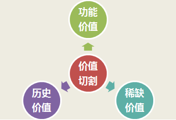

我们说营销的本质属性是卖价值，不是卖价格！
如何体现价值？有三个切割的角度：功能价值切割、历史价值切割、稀缺价值切割。 我们大多数产品采用的是功能价值切割。比如，海飞丝去头屑；OPPO音乐手机；宝马“驾驶的乐趣”，这类产品的定价以生产成本为基础，同时参考需求重要性和紧迫性。
还有一种价值切割的方法是卖历史，比如白酒行业就是最会讲历史故事的行业。所以中高端白酒的定价从来不参考生产成本。
但是卖历史不是每个企业都可以有的，卖稀缺却是很多企业可以努力做到的。所以我们今天重点讲的是价值切割的第三个角度——卖稀缺。
俗话说“物以稀为贵”，如果一个产品被打上“稀缺”的标签，这个产品被认为是珍贵的，人们就愿意以远远高于成本的价格去购买。如何卖稀缺？有四种路径。
第一，切割稀缺地域。
农夫山泉这个企业与其说是卖水的，不如说是圈地的，从千岛湖到长白山，可以洞察到他的战略动机，切割稀缺地域，从源头垄断好水资源，最终为农夫山泉贴上“珍稀好水”的标签，这样农夫山泉比普通水的价格高出2倍，人们也不会觉得贵。
第二，切割稀缺原料
对于许多功能相同的产品，如果能增加原料的稀缺性，会让消费者更加信赖。
一个甘肃知名的药品企业，生产一种祖师麻黑膏药，黑膏药本身不稀奇，就是中国传统的固体膏药；祖师麻的功效也不稀缺，就是祛风通络、散瘀止痛，很多中药材都有类似的功能；但是祖师麻稀缺啊！
祖师麻是生长在甘肃祁连山雪线以上唯一的草本植物，祁连山山顶常年积雪，所以人们就会对这种在雪里顽强生长的植物产生了神奇的想象，觉得这根草一定蕴藏着一种巨大的能量，能够抵御冰雪的寒冷，自然也能驱散身体的寒气。
营销这样的黑膏药，卖功效卖不出差异，因为有这类功效的产品太多了。只有卖稀缺才能卖出价值，卖出差异。于是乎，祖师麻黑膏药定位为——风湿止痛神仙草，广告语是——祁连雪山天赐神药。
战略上还不能止步于做一个好药，企业继续从战略上切割祖师麻稀缺资源，从祖师麻种植开始，到祖师麻产品的研制、生产和销售，建立祖师麻全产业链，不仅自供药品原料，而且要供给其他中药企业，充分发挥祖师麻珍稀草本价值，从做大一个产品，到垄断一个产业，这样才能从1个亿的黑膏药，发展成为几十亿、上百亿的祖师麻产业集团。
用一根神奇的草，成就一个伟大的企业，创造“风湿无痛”的快乐世界。
我讲这个故事的目的是想告诉大家，我们中国蕴含着很多神奇的物质，我们中国又有深厚的文化传承，但是我们没有玩好营销，不敢玩大营销，所以很多的资源被浪费了，很多文化精髓都变成了历史的尘埃，真的是很可惜。
第三，切割稀缺工艺
阿胶的原料不稀缺，就是驴皮，所有正规企业的阿胶原料都是一样的。那东阿阿胶凭什么卖那么贵？一张驴皮3000元，一块东阿阿胶可以卖到600多元。
东阿阿胶卖的是稀缺工艺。东阿阿胶号对外传播自己的熬制工艺和配方都是国家级保密项目，是传承了3000年的正宗工艺。
因为工艺稀缺，所以产品才增值！
第四，创造稀缺市场
许多服装、汽车、珠宝等奢侈品品牌喜欢搞限量发售，创造稀缺价值，卖天价，卖尊享。其实大众产品也可以。
快时尚品牌Zara属于中低档服饰品牌，同样玩起了限量销售。Zara每年推出12000多种服饰产品，可是每一款的量都不大。即使是畅销款，在一家专卖店也没几件，爱买不买，卖完就完，不买就等新的，这是ZARA甩给顾客的态度，因此ZARA的每一件产品，就是几十元的普通T恤儿也被贴上了“稀缺”的标签。
款式多更新速度快增加了顾客的新鲜感，吸引他们不断重复光顾，限量供应又加速了顾客每次下单的决心和速度，所以ZARA店里的顾客成交率非常高，而且很少一次只买一件，通常是一次拍下2-3件。
人为创造稀缺市场，让ZARA成为独一无二的象征。
好，我们简单总结一下，切割功能、切割历史、切割稀缺是切割价值的三个角度，历史不是每个企业每个产品都可以拥有的，但是创造稀缺元素往往是可以实现的，无论是切割稀缺地域、切割稀缺原料、切割稀缺工艺、还是人为创造稀缺市场，都可以让产品价格远远高于它的成本。物以稀为贵！